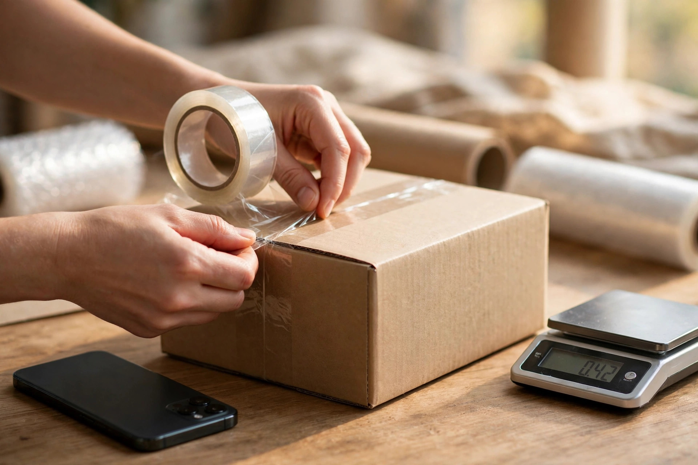
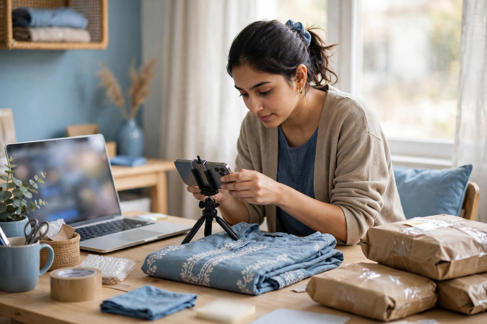

Many people in Pakistan think about selling online: a shopkeeper who wants customers beyond his street, a home-based maker with a real skill, or someone with a job who wants a second income. The idea is attractive, but the starting point often feels confusing. Should you build a website first, open a marketplace account, or start on social media? This guide gives a calm, realistic order of steps, without promising quick riches.
The truth is that an online business is still a business. You need something people want, a fair way to price it, a reliable way to deliver it, and a way for customers to trust you. The internet simply gives you new places to do those old things. Start small, learn from real orders, and grow step by step.
Start With What You Will Sell
Your first decision is the product. Choose something you understand well enough to describe honestly and answer questions about. If you already run a physical shop, your existing stock is a natural starting point. If you are starting from home, skills and local products often work well: clothing, food items that travel safely, handmade goods, or items you can source reliably from a supplier you trust.
Keep the range narrow at first. A small, clear range is easier to photograph, describe, price and pack than a huge catalogue you cannot manage. You can always add more later, once you know what people actually buy. Also think about delivery early: fragile, very heavy or perishable items are harder to post across the country, so consider how each product will travel before you commit to it.

Decide Where You Will Sell
You do not have to choose only one place forever. Many sellers begin where customers already are, such as a marketplace or social media, and add their own website as they grow. Each option has trade-offs, which our comparison of selling on Daraz or your own online store explains in detail. What matters at the start is picking one main channel and learning it properly, instead of opening accounts everywhere and managing none of them well.
Whichever channel you choose, set it up completely: a clear business name, a short description of what you sell, good contact details and your delivery and returns information. An unfinished, empty-looking page puts people off before they even look at your products. If you do build your own store, think about search from the beginning, because our ecommerce SEO service shows how product and category pages written for real customer searches help a new store get found on Google over time.
Sort Out Payments and Delivery Early
Before your first order arrives, know how you will be paid and how the parcel will reach the customer. Many buyers in Pakistan still prefer cash on delivery, while others are happy to pay by bank transfer or a mobile payment app. Offering clear choices, explained in plain words on your page, removes doubt at the moment of ordering.
For delivery, compare courier services available in your area, learn how to pack your product safely, and keep the customer's name, address and phone number accurate on every parcel. Late or damaged deliveries undo good marketing very quickly. Our separate guide on payments and delivery for online sellers covers this side of the business in more detail.
Present Your Products Honestly
Online, your photos and words do the job a shop assistant does in person. Take clear photos in good light, showing the product from more than one side, and write descriptions that include size, material, colour and any limits the buyer should know. Honest presentation may feel slower than big claims, but it brings fewer returns, fewer angry messages and better reviews.
- Use real photos of your own product, not copied supplier images where possible.
- State the price and delivery charges clearly, with no surprises later.
- Answer messages politely and within a reasonable time.
- Keep a simple record of every order, payment and delivery.

Find Your First Customers and Learn
Your first customers often come from people who already know you: family contacts, local customers, community groups and your own social media circles. Tell them plainly what you are selling and where to order. Ask early buyers for honest feedback and, if they are happy, a review. Do not buy fake reviews or copy another seller's photos to look established; that damages trust the moment a customer discovers it.
Treat every early order as information. Which products get enquiries? Which questions come up again and again? Which posts or listings bring messages? Use those answers to improve your descriptions and choose what to promote next. Steady learning like this is how small online businesses grow, far more reliably than chasing every new trend.
Build for the Longer Term
Once orders are coming in, start building assets you own: your own website, a customer list you keep with permission, and helpful content that answers buyer questions. Search visibility grows slowly but lasts, and it brings customers who are actively looking for what you sell. Reading about SEO in Pakistan will help you understand how local customers search and how a small business can appear in those results.
Starting an online business in Pakistan is realistic for many people, provided expectations stay honest. Begin with a clear product, one channel managed well, reliable delivery and truthful presentation. Do those basics consistently, learn from each order, and you will have a foundation that can grow at a pace you can actually manage.

Frequently Asked Questions
Do I need a website on the first day?
Not always. Many sellers start on social media, WhatsApp or a marketplace to learn what customers buy, then build their own website once the idea is tested. A website becomes more valuable as you grow, because it is a place you control.
How much money do I need to start?
It depends on what you sell. Starting small with a narrow range, your own phone for photos and simple packaging keeps early costs lower and safer. Spend first on the product itself and on reliable delivery, not on fancy extras.
What should I sell online?
Choose something you understand, can source reliably and can describe honestly. Products that are easy to pack and post, and that people already ask you about, are often a sensible place to begin testing.
How long before an online business makes sales?
There is no fixed timeline. Some sellers get early orders from people they know, while wider sales usually build gradually as trust, reviews and search visibility grow. Treat the first months as learning and building, not as instant success.
Want More Customers From Google?
Call 0327 7350830 or email seozaheer14@gmail.com. Zaheer Seo Expert, Layyah - Rajan Shah Road, Rana Nagar, Chak 116 TDA, Pakistan. Open 24 hours.
Get Your SEO Strategy →